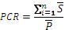
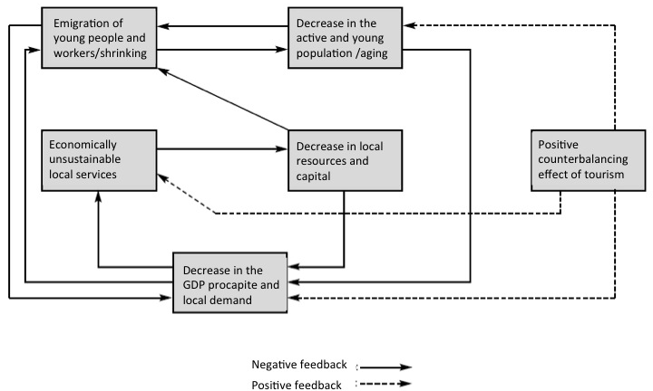

3. Impacts of demographic change7
Demographic change has significant impact on different aspects of economy, society and environment. Below we summarise some of the most important effects of such changes.
3.1. Economy
3.1.1. Macroeconomic impacts of DC
Demographic change affects such important macroeconomic areas as economic growth and public financing. Meanwhile it may also open up new economic segments.
Ageing results in the decrease of activity rates, which means that the number of active population (persons between 15-64 years of age as defined by international statistical organisations, definitions may vary between countries) decreases compared to the number of elderly people. The shrinking labour force potentially impacts economic growth by decreasing, among others, productivity and investment. The loss of employment opportunities is one of the major causes of population shrinkage, and the outmigration of younger, more educated groups of society again leads to economic decline.
Demographic change puts major challenges for public financing: it increases demand for certain services, while at the same time decreases available resources for them.
On the one hand, changing age structure affects the demand for age-related expenditures. Pension systems are especially vulnerable to the effects of ageing, but the demand of other public services, such as health care and long term care is also increasing. On the basis of current policies, public expenditures on pensions, health care and long term care are projected to increase by 4.1 per cent to around 29 per cent of GDP between 2010 and 2060 in the EU. Public pension expenditure alone is projected to rise by 1.5 per cent to nearly 13 per cent of the GDP by 2060. In addition, demographic changes will lead to strong pressure to increase public expenditures in other areas as well, such as infrastructure, housing and education. Meanwhile, in areas affected by shrinking, the cost per unit of many services increases as less and less clients use such services.
On the other hand, ageing and shrinking decreases the available resources for public services, as it leads to a decrease in the proportion of taxpayers. Scarcity of resources in shrinking regions is further induced by the fact that grants and subsidies provided to local authorities from higher levels of government are often determined (fully or partially) by the population number. This is especially problematic at a time when resources are particularly needed to cope with problems arising from shrinking itself. Lack of resources is further exacerbated by the global economic crisis since 2008.
Meanwhile, ageing may open up new economic segments. The so-called ‘silver economy’ refers to older consumers’ rising demand for new types of products and services, such as personalised care, technological solutions enabling people to maintain a healthy and independent life as they age. Such an increased demand creates new jobs in relevant production and service areas, such as health and certain social services, thus it presents an income generation option for economic actors and a tax revenue option for the state. The term ‘silver economy’ sometimes also encompasses the fact that there is an increasing segment of older workers who ought to be considered a resource in the labour market (additional productivity through longer careers, transferable skills to younger workers) contributing to economic growth.8
3.1.2. Microeconomic impacts
Demographic change brings about significant change in the needs of local societies. It changes the demand for goods and services, especially for those targeting certain age groups. Just to name a few, changes may include decreasing clientele of local shops, fewer users of infrastructure such as water and sewage, changing transport needs (in terms of targets, times and physical features), increased demand for health care or home care/assistance, etc.
Decrease in the number of costumers is likely to result in increasing per capita costs for services. However, there are differences between services in terms of their sensitivity to changing demographic structure. Certain infrastructure costs are directly related to population numbers, being less cost-effective in case of lower population numbers, such as public transport and water provision. Others are rather related to the age structure of the population, for instance costs of schools, health care, nursing homes are strongly age-dependent. Further types of infrastructure costs are less sensitive to either ageing or shrinking, but are rather linked to the settlement structure of the given area, such as road maintenance.
Moreover, demographic change can have a different impact in densely and sparsely populated areas, and the settlement structure of the given area also plays a role. In densely populated urban areas, while population shrinkage may lead to the increase of infrastructure costs per capita (e.g. in public transport and water provision), it does not jeopardise the provision of the services as such. In sparsely populated areas such changes might make service provision untenable or unsupportable.
Meanwhile new regulations and technologies may also influence costs. New/revised regulations and technologies may result in the decrease of costs: e.g. easing standards or the introduction of ICT-based services is likely to have such an effect. However, introduction of new regulations and technologies may also increase costs, e.g. experts asked in the ADAPT2DC project envisage that the costs for operators of public transport will rise because the EU will impose new regulations and technologies, for instance environmentally-friendly technologies.
Increasing costs may render the operation of certain services economically unfeasible. The provision of social and cultural services, in particular, is the first to be sacrificed via cuts in the public expenditures as it is often perceived as less necessary than others, such as water and sewage treatment
In sum, demographic change shapes the demand for services, the per capita costs, and through this, it may affect the availability and accessibility of such services. This is especially true for services targeting certain age groups.
3.1.3. Cost analysis over Central Europe9
ADAPT2DC has made a contribution to challenge the bottlenecks of data on public service economics across Europe that could be supportive in policy making. By accessing business intelligence data (Amadeus by Bureau van Dijk) a tailor-fit model was elaborated and implemented. A so called proxy cost ratio (PCR) was calculated in NUTS3 level. The PCR shows the average sales of specific services per inhabitant of a territory. It is rather “neutral” as it shows a certain comparable value of service delivered to citizens. It means that NUTS3 regions can be described by the value of service sold in the investigated fields. It is not the price of the service. PCR has become central part of the cross analysis of infrastructure and service costs, even though limitations of the approach have been identified (for method and limitations see: Baron, Ochojski, Polko 2014). Social care, health care, public housing, public transport as well as water and sewage have been analysed in terms of PCR at NUTS3 level.10
Map of proxy cost ratio for health care in Central Europe [image]
{kind=link}
The PCR shows average sales of specific services per inhabitant of territory. Sales value in defined NACE classes was selected as a key proxy of costs. The user Proxy Cost Ratio is calculated as follows:

where:
PCR is a Proxy Cost Ratio in NUTS [EUR/person]
n is a number of business entity records in relevant NACE class registered in NUTS
is an average annual sales value of a business entity in 2007-2011 [EUR]
is an average annual population in NUTS in years 2007-2011 [persons]
{kind=link}
The PCR shows average sales of specific services per inhabitant of territory. Sales value in defined NACE classes was selected as a key proxy of costs. The user Proxy Cost Ratio is calculated as follows:
where:
PCR is a Proxy Cost Ratio in NUTS [EUR/person]
n is a number of business entity records in relevant NACE class registered in NUTS
is an average annual sales value of a business entity in 2007-2011 [EUR]
is an average annual population in NUTS in years 2007-2011 [persons]
Map of proxy cost ratio for public transport in Central Europe [image]
{kind=link}
The PCR shows average sales of specific services per inhabitant of territory. Sales value in defined NACE classes was selected as a key proxy of costs. The user Proxy Cost Ratio is calculated as follows:
where:
PCR is a Proxy Cost Ratio in NUTS [EUR/person]
n is a number of business entity records in relevant NACE class registered in NUTS
is an average annual sales value of a business entity in 2007-2011 [EUR]
is an average annual population in NUTS in years 2007-2011 [persons]
The PCRs were further statistically tested against demographic change, spatial and economic parameters. The analysis for all available PCR observations in Central Europe shows that with a precaution of the known limitations, costs of public services are interrelated with demographic change and economic conditions across Central Europe. Furthermore, the contextual and qualitative premises pinpoint that public service provision much relies upon the spatial characteristics of the territory. For this reason a focused mapping and statistical tests have been done with reference to predominantly urban regions, intermediate regions and predominantly rural regions, according to the classification provided by Eurostat. (a link to deliverable on ADAPT website: Baron, Marcin; Ochojski, Artur; Polko, Adam (2014): Deliverables (output 3.2.6 Collection of socioeconomic background data ADAPTDC project).
3.1.4. Management of public services11
Demographic change and the cost of public service are interrelated within the supply-demand logic of public service delivery. In other words, the management of public service supply needs to challenge the demand-side characteristics with its changing demographic parameters. First of all, it is for local conditions; local decisions of political and managerial nature; that highly influence the economic context of delivery in terms of supply size, quality and costs. Substitutive or competitive goods change the overall supply of a given service locally. Secondly, it may be the national systems that set up general conditions. In other words, state political decisions imply and regulate the delivery process to make it either market, quasi-market or non-market based. They may be very generous to service provision takers so as to enhance the availability of goods and service or several limitations of social or economic nature imply. Also, the level of territorial delivery is different across the countries.
The management of public services has been evolving as a competence extending the pure administrative routine of the administration. The reasons of change are more or less the same everywhere: to make the service standardised - up to the standards of the supplied product, to make it available if the goods are not well supplied and to reduce the cost for the general public. Thus, with knowledge on the globally discussed challenges of economic nature, we may further expect a general pressure on local public service operators, be it a public or a private-based, to make use of available resources in a more efficient and effective way in a longer perspective.
A difference to the demand side is the volume and the structure of the consumers and this is where demographic change comes to the picture.
3.2. Society
3.2.1. Poverty
One of the important factors in shrinking is often selective migration: the outmigration of higher status, younger population groups, leaving behind lower status and/or elderly population. Ageing and selective migration processes lead to the concentration of poverty in affected areas. Meanwhile, as discussed above, public actors’ financial means to provide assistance to combat poverty may decrease.
Elderly people with low socio-economic status in deprived areas are increasingly exposed to the risk of poverty, isolation and social exclusion. In certain countries, elderly women and the very old face an increased poverty risk.12 Their vulnerability is greater due to decreasing opportunities for family care, changing family structures and a widening generation divide driven by the internet and new technologies.13
3.2.2. Segregation and marginalisation
Emigration of young, active people and the resulting concentration of lower status and/or elderly population results in an increase in the spatial distance between different population groups (lower status and higher status, younger and older). Such a spatial distance between different population groups is often referred to as spatial segregation.
The spatial concentration of low status population opens a self-perpetuating circle of poverty and marginalisation: long-term and selective outmigration of young, active people leads to a decrease in local demand and GDP per capita, which renders local services unfeasible to operate therefore results in their closure, which further decreases the area’s attractiveness, and fuels the outmigration of younger and more active people (see Figure X)
 Source: adapted from Buran, Aimone, Ferlaino and Migliore (1998:9), cited in Regional Guidebook – Methods to adapt to or counterbalance shrinking. Report compiled in the framework of the ADAPT2DC project, p. 7.3.2.3. Social cohesion
Ageing and shrinking poses challenges to social cohesion. Ageing, accompanied by a mutual lack of understanding of each other’s life style (a divide increased by different knowledge and skills concerning the internet and new technologies) and lack of intergenerational support decreases social cohesion. The outmigration of higher status, younger, more mobile population groups, leaving behind lower status groups and elderly population has a similar effect. In addition, ageing and shrinking may lead to a negative image, stigmatisation of the area which results in a decrease of attachment to the given space by residents, again resulting in decreased social cohesion (and related to this, problems such as deteriorating living conditions due to less care for the built and natural environment, further outmigration etc.) In areas subject to large-scale migration in the past decades, social integration as well as age-related problems of residents of foreign origin may pose specific problems. Adaptation of services and infrastructure to demographic change itself can trigger social tensions e.g. closure of schools is often subject to protest by local residents.
3.3. Built environment
Population shrinking is likely to result in a decreased demand for housing (however it is important to note that housing demand is primarily linked not to population size as such, but the number of households), therefore an increasing number of vacant housing. Industrial downgrading leaves back unused industrial facilities and growing brownfield areas. Shrinkage may also lead to growing vacancies in public facilities: hospitals, nurseries, shops, shopping centres.
Vacancies lead to both economic and social problems. They create an oversupply in the property market; therefore decrease property value in affected areas. In addition, vacant property poses security problems and has a strong negative influence on the image of the area which further depreciates the value of property in the vicinity. Falling property prices and rents, accompanied by a drop in real estate investments, and a decline of expenditure on maintenance due to lack of both public and private resources lead to a (further) deterioration of buildings.
Shrinking also results in decreasing demand for infrastructure networks, such as water and sewage systems, which makes formerly constructed systems difficult to maintain both financially and technically (longer detention times of piped water, increased corrosion of tube materials etc).14
On the other hand shrinking provides the opportunity to create a more liveable, less dense living environment and it may remove environmental pressures and increase green spaces. In certain cases after the demolition of unused residential, commercial or industrial objects, new green spaces can be created with parks that increase the quality of the residential environment, however, this solution requires a large amount of public funding.
Meanwhile housing supply can influence opportunities for population increase: i.e. adequate housing supply can attract migrants and the availability as well as the affordability of certain housing solutions may have an impact on people’s choice. However, it has to be stressed that housing supply alone is not sufficient to attract newcomers; the key factor of attractiveness of a given area is its potential to offer employment opportunities.
Ageing poses changing demands to the built environment, including housing, public buildings, public areas, the type and accessibility of services, institutions and recreational areas. Therefore there is a need for an adaptation of housing, as well as settlements’ socio-spatial structure to the needs of ageing societies. Adaptation also opens up new employment and economic opportunities for building companies.
Review questions
- How does demographic change affect economic growth?
- How does demographic change affect public financing?
- What is ’silver economy’?
- List a few important changes demographic change brings about in local societies in terms of needs for goods and services!
- How does shrinking population affect the costs of services? Name a few services which are very sensitive to age structure. Name a few services very sensitive to population number. Name a few services less sensitive to demographic change.
- Why does vacant housing pose a problem?
- What does the term ’spatial segregation’ mean?
- Why is segregation and marginalisation self-perpetuating? What are the main steps of such a process?
Orienting questions
- Were any public services and facilities closed down in your area in the past 10 years? Could demographic change contribute to the decision to close it? What kind of services and facilities are affected? Are there areas where vacant public facilities are more common?
- Are you aware of any new services opened in your area in the past 10 years which serves the specific needs of the elderly? What type of services are these?
- In case basic and/or specialised health services exist in your area: how did the workload of health service providers change in the past 10 years?
- In case elementary schooling is present in your area: how did the number of pupils change in the past 10 years?
- How much unused space in public buildings is suitable for future housing units?
- How did the housing property prices in your area change in the past 10 years?
- Is any of the areas affected by vacant property considered by local society as dangerous and/or ’problematic’ in any sense?
- Are there any areas in your vicinity where poor people are concentrated? What kind of areas are these? (Urban/rural, physical characteristics, supply with services and infrastructure etc.)
- Is there any sign of reuse of vacant property? What kind of reuse is this?
- Make a ’problem list’ of things in your area which might pose a barrier to elderly people in using public services and spaces!
- In case shutdown of services and/or infrastructure took place in your area in the past 10 years: were there any public debates, protests, accompanying such moves?